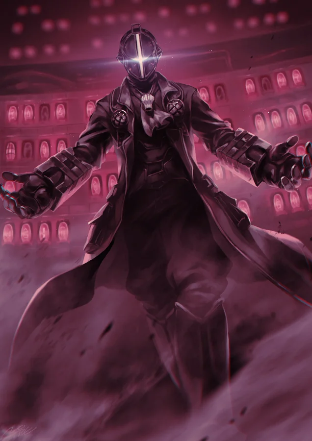
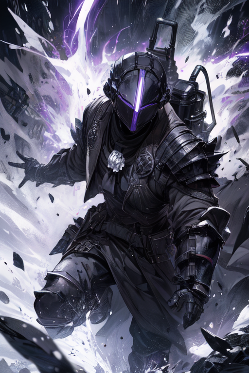
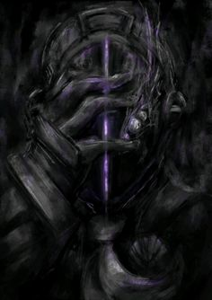

Персонажи
Син
Обычный получеловек, житель Дыры. С трагичным прошлым шагает в туманное будущее, надеясь на Семью и странных новичков.
"Соломенная шляпа"
Загадочный человек с сомнительной репутацией. Трикстер, который прячется за разными лицами и делает все свои дела чужими руками
Бондрюд
Безумный ученый с 5го этажа Бездны. Любитель экспериментов, оставляя в стороне мораль и какое либо сострадание. На данный момент находится на 3ем этаже и всецело поддерживает Сина


